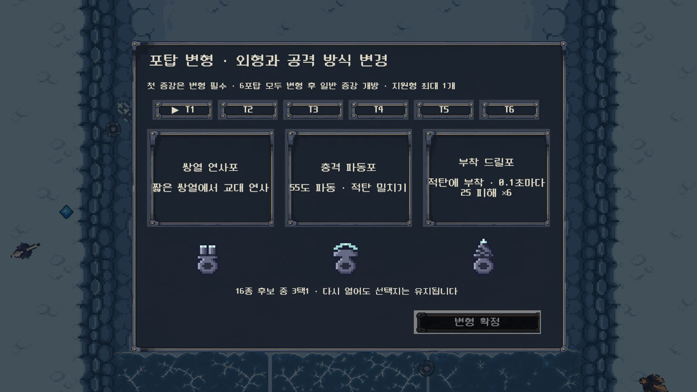
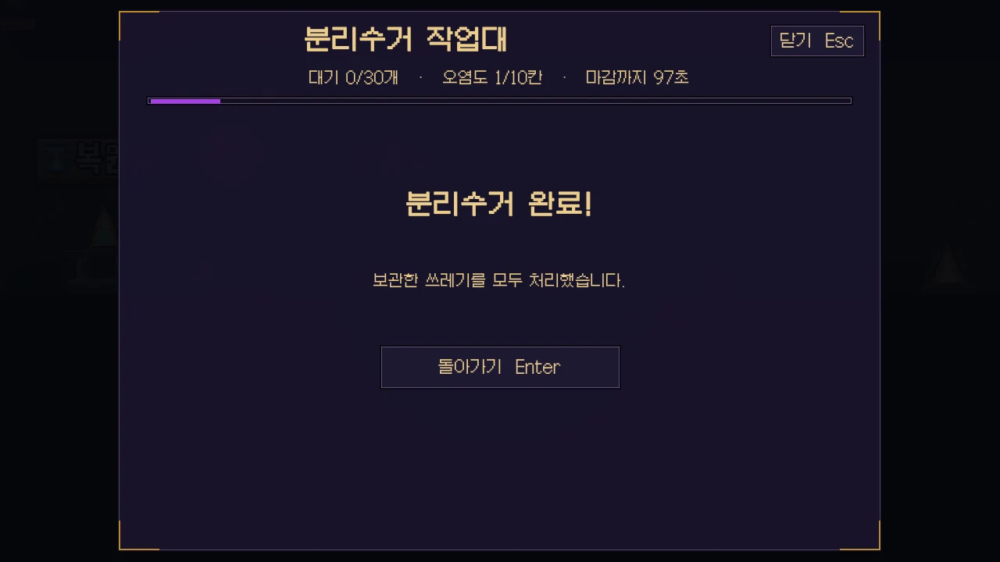

1게임

퍼펙트 매니지먼트
KBO 실제 선수·구단으로 하는 웹 단장 시뮬레이션. 1982~2026년 가운데 시작 해와 구단을 골라 여러 해를 운영합니다.
- 내 역할
- 기획·결정, AI 작업 조직 설계·운영, QA 설계
- TC
- 217개 · 기능 영역 19개
- 기간
- 2026-10 ~ (커밋 861, PR 162건)

Rushitadel
본체 1기 + 포탑 6기(현재 빌드 기준)로 버티는 액션 디펜스. Unity 6.
- 내 역할
- QA: TC 작성·테스트 수행 예정
- TC
- 131개 · 스모크 21개
- 기간
- 2026-06 ~ 11

쓰레기 집게 소년
지하를 탐험해 쓰레기를 모으고 분리수거로 하루 할당량을 채우는 2D 픽셀 게임. Unity 6.
- 내 역할
- QA: TC 작성·테스트 수행 예정
- TC
- 177개 · 스모크 25개
- 기간
- 2026-08 ~ 11
2플레이 기록
Steam 계정의 게임별 플레이 시간(파일 근거)과, Steam 밖의 League of Legends·콘솔·모바일 이력(본인 제공)입니다. 맨 앞에는 오래 해 온 모바일 야구 게임과 플랫폼별 스포츠 게임을 모았습니다. 시간으로는 경쟁 팀 게임이 가장 길고, Steam 안에서는 스포츠 매니지먼트와 전략 게임에 쓴 시간이 두껍습니다.
모바일 · 스포츠
- 컴투스 프로야구 20265년
- 컴투스 프로야구 V263년
- 마구마구 20261년
- PES (모바일)10h
- 클래시 로얄5년
- 쿠키런4년
- 세븐나이츠3년
- 클래시 오브 클랜2년
- TFT 모바일2년
- 냥코 대전쟁1년
- 우마무스메 프리티 더비30h
- 드래곤 플라이트30h
- 겨울의 탑15h
- 삼국지: 한말패업10h
스포츠 게임 한눈에 (플랫폼 전체)
| 종목 | 게임 | 플랫폼 | 기간 | 출처 |
|---|---|---|---|---|
| 야구 | 컴투스 프로야구 2026 | 모바일 | 5년 | 본인 제공 |
| 야구 | 컴투스 프로야구 V26 | 모바일 | 3년 | 본인 제공 |
| 야구 | 마구마구 2026 | 모바일 | 1년 | 본인 제공 |
| 야구 | MLB The Show 21 | PS4 | 150h | 본인 제공 |
| 야구 | eBaseball PRO SPIRIT | PC | 50.2h | Steam |
| 야구 | Out of the Park Baseball 22 | PC | 25.9h | Steam |
| 축구 | FC 온라인 (옛 피파 온라인 4) | PC | 8년 · 1,100h | 본인 제공 |
| 축구 | Football Manager 시리즈 (에디터 포함) | PC | 443.3h | Steam |
| 축구 | 피파 온라인 3 | PC | 400h | 본인 제공 |
| 축구 | FC·FIFA 시리즈 | PS4 | 150h | 본인 제공 |
| 축구 | FIFA 22 · FIFA 23 | PC | 57.1h | Steam |
| 축구 | PES 2018 | PC | 50h | 본인 제공 |
| 축구 | PES (모바일) | 모바일 | 10h | 본인 제공 |
| 그 밖 | Wii 스포츠 리조트 | Wii | 250h | 본인 제공 |
| 그 밖 | UFC 4 | PS4 | 40h | 본인 제공 |
| 그 밖 | F1 Manager 2024 | PC | 19.1h | Steam |
"Steam"은 Steam 기록(파일 근거), "본인 제공"은 사용자가 적어 준 값입니다. 연 단위와 시간 단위가 섞여 있어 이 표는 합계를 내지 않습니다.
플레이 시간 집계
가장 오래 한 게임
Steam 1위 PUBG(648.9h)의 약 9.6배, Steam+LoL 합계의 51.1%입니다. PC 장기 운영 카드의 "리그 오브 레전드 12년"과 같은 게임이고, 시간은 이 6,217h로 한 번만 셉니다. 같은 축에 그리면 Steam 게임 막대가 거의 보이지 않아 따로 두었습니다. 수치는 Riot 클라이언트 기록을 본인이 알려 준 값이며, 이 문서에서 파일로 확인하지는 못했습니다.
Steam 플레이 시간 상위 20
순위에서 뺀 도구·비게임: Wallpaper Engine, tModLoader, Football Manager 에디터 3종, Spacewar, PUBG 테스트 서버 (합계 222.5h, 전체 목록에는 표시).
장르별 합계
빗금 막대(MOBA)는 축을 넘어 잘라 그렸습니다. 실제 6,217h는 Steam에서 가장 긴 장르인 슈팅·대전의 3.3배입니다. MOBA 말고는 모두 Steam 기록입니다.
- 스포츠 매니지먼트는 FM 시리즈 외에 OOTP 22(야구), F1 Manager 2024, Teamfight Manager까지 했습니다. 야구 게임은 eBaseball PRO SPIRIT도 있습니다. 퍼펙트 매니지먼트의 스카우트 추측 범위, 선수 상세 화면은 이 장르의 관례 위에 있습니다.
- Total War: 삼국, 삼국지 13, Stellaris, 문명 V, Hearts of Iron IV 같은 전략 게임도 길게 했습니다. 시대 진행(1982~2026 연표대로 리그가 바뀜)과 긴 시간 단위의 운영이 이 계열과 닿아 있습니다.
- 가장 오래 한 League of Legends는 5인 팀 경쟁 게임입니다. 조합·밴픽을 고르고 패치마다 바뀌는 메타를 따지는 일은, 선수를 기용하고 라인업을 짜는 단장의 판단과 닮은 데가 있습니다.
- 야구 게임도 오래 했습니다: 모바일 컴투스 프로야구 2026 5년·V26 3년, 마구마구 2026 1년, PS4 MLB The Show 21 150h (본인 제공), Steam OOTP 22와 eBaseball PRO SPIRIT. 퍼펙트 매니지먼트가 야구를 다루는 것과 이어지는 경험입니다.
- UI 대개편 때 FM·OOTP의 정보 구조를 참고한 것도 이 경험에서 나왔습니다. 그림은 베끼지 않았습니다.
| 이름 | 시간 (h) |
|---|---|
| Football Manager 2021 | 258.8 |
| Football Manager 2020 | 99.0 |
| Football Manager 2021 Editor | 33.5 |
| Football Manager 2023 | 32.7 |
| Football Manager 27 | 16.0 |
| Football Manager 2020 Editor | 2.9 |
| Football Manager 2023 Editor | 0.5 |
전체 목록 펼치기 (Steam 외 1개 + Steam 게임 128개 + 도구 7개)
| # | 이름 | 장르 (작성자 분류) | 시간 (h) |
|---|---|---|---|
| - | League of Legends Steam 외 · 본인 제공 | MOBA (경쟁 팀전) | 6,217.0 |
| 1 | PUBG: BATTLEGROUNDS | 슈팅·대전 | 648.9 |
| 2 | Warframe | 슈팅·대전 | 376.4 |
| 3 | Grand Theft Auto V Legacy | RPG·액션·오픈월드 | 324.5 |
| 4 | The Elder Scrolls V: Skyrim Special Edition | RPG·액션·오픈월드 | 302.7 |
| 5 | Counter-Strike 2 | 슈팅·대전 | 281.6 |
| 6 | Total War: THREE KINGDOMS | 전략·역사 시뮬레이션 | 266.6 |
| 7 | Football Manager 2021 | 스포츠 매니지먼트 | 258.8 |
| 8 | The Binding of Isaac: Rebirth | 로그라이크·카드·보드 | 190.3 |
| 9 | Project Zomboid | 생존·샌드박스 | 165.2 |
| 10 | The Long Dark | 생존·샌드박스 | 149.0 |
| 11 | Terraria | 생존·샌드박스 | 148.4 |
| 12 | Fallout 4 | RPG·액션·오픈월드 | 139.2 |
| 13 | Palworld | 생존·샌드박스 | 130.8 |
| 14 | Mount & Blade: Warband | RPG·액션·오픈월드 | 112.8 |
| 15 | Football Manager 2020 | 스포츠 매니지먼트 | 99.0 |
| 16 | Romance of the Three Kingdoms XIII | 전략·역사 시뮬레이션 | 97.1 |
| 17 | FOR HONOR | 슈팅·대전 | 94.4 |
| 18 | Slay the Spire 2 | 로그라이크·카드·보드 | 90.5 |
| 19 | Darkest Dungeon® | 로그라이크·카드·보드 | 87.5 |
| 20 | Stellaris | 전략·역사 시뮬레이션 | 77.5 |
| 21 | Delta Force | 슈팅·대전 | 76.1 |
| 22 | Sid Meier's Civilization V | 전략·역사 시뮬레이션 | 68.3 |
| 23 | Cyberpunk 2077 | RPG·액션·오픈월드 | 66.9 |
| 24 | The First Descendant | 슈팅·대전 | 59.0 |
| 25 | This War of Mine | 경영·건설 | 58.9 |
| 26 | RimWorld | 경영·건설 | 54.1 |
| 27 | Frostpunk | 경영·건설 | 51.1 |
| 28 | eBaseball™: PRO SPIRIT | 스포츠 (직접 플레이) | 50.2 |
| 29 | FIFA 22 | 스포츠 (직접 플레이) | 49.1 |
| 30 | Total War: WARHAMMER III | 전략·역사 시뮬레이션 | 48.8 |
| 31 | Unturned | 생존·샌드박스 | 48.6 |
| 32 | Tabletop Simulator | 로그라이크·카드·보드 | 47.1 |
| 33 | Valheim | 생존·샌드박스 | 46.2 |
| 34 | World of Warships | 슈팅·대전 | 45.0 |
| 35 | Don't Starve Together | 생존·샌드박스 | 44.3 |
| 36 | Hearts of Iron IV | 전략·역사 시뮬레이션 | 41.8 |
| 37 | Eternal Return | 슈팅·대전 | 40.5 |
| 38 | Stardew Valley | 생존·샌드박스 | 40.1 |
| 39 | ASTRONEER | 생존·샌드박스 | 38.4 |
| 40 | Tom Clancy's Ghost Recon® Wildlands | 슈팅·대전 | 37.3 |
| 41 | Cities: Skylines | 경영·건설 | 33.6 |
| 42 | Football Manager 2023 | 스포츠 매니지먼트 | 32.7 |
| 43 | Tom Clancy's Rainbow Six Siege | 슈팅·대전 | 30.0 |
| 44 | XCOM 2 | 전략·역사 시뮬레이션 | 28.4 |
| 45 | Ghost Recon Breakpoint | 슈팅·대전 | 27.7 |
| 46 | Out of the Park Baseball 22 | 스포츠 매니지먼트 | 25.9 |
| 47 | Ruined King: A League of Legends Story™ | RPG·액션·오픈월드 | 24.5 |
| 48 | Yu-Gi-Oh! Master Duel | 로그라이크·카드·보드 | 22.8 |
| 49 | Monster Hunter: World | RPG·액션·오픈월드 | 21.9 |
| 50 | Insurgency | 슈팅·대전 | 19.1 |
| 51 | F1® Manager 2024 | 스포츠 매니지먼트 | 19.1 |
| 52 | Dead by Daylight | 슈팅·대전 | 18.0 |
| 53 | Black Squad | 슈팅·대전 | 17.3 |
| 54 | Football Manager 27 | 스포츠 매니지먼트 | 16.0 |
| 55 | Teamfight Manager | 스포츠 매니지먼트 | 14.5 |
| 56 | Raft | 생존·샌드박스 | 13.8 |
| 57 | Alaska Gold Fever | 경영·건설 | 12.9 |
| 58 | Ring of Elysium | 슈팅·대전 | 12.4 |
| 59 | Heroes' Vow: Three Kingdoms | 전략·역사 시뮬레이션 | 12.3 |
| 60 | The Planet Crafter | 생존·샌드박스 | 12.2 |
| 61 | Subnautica | 생존·샌드박스 | 12.1 |
| 62 | Warface: Clutch | 슈팅·대전 | 11.3 |
| 63 | Risk of Rain 2 | 로그라이크·카드·보드 | 11.3 |
| 64 | Endzone - A World Apart | 경영·건설 | 10.5 |
| 65 | TEKKEN 7 | 슈팅·대전 | 10.3 |
| 66 | World of Tanks | 슈팅·대전 | 9.6 |
| 67 | Green Hell | 생존·샌드박스 | 9.1 |
| 68 | Deceit | 슈팅·대전 | 8.3 |
| 69 | Assassin's Creed Odyssey | RPG·액션·오픈월드 | 8.1 |
| 70 | EA SPORTS™ FIFA 23 | 스포츠 (직접 플레이) | 8.0 |
| 71 | Arma 3 | 슈팅·대전 | 7.8 |
| 72 | FragPunk Playtest | 슈팅·대전 | 7.7 |
| 73 | Plants vs. Zombies: Game of the Year | 캐주얼·파티·기타 | 7.6 |
| 74 | The Forest | 생존·샌드박스 | 7.5 |
| 75 | MapleStory | RPG·액션·오픈월드 | 7.5 |
| 76 | Slay the Spire | 로그라이크·카드·보드 | 7.1 |
| 77 | War Thunder | 슈팅·대전 | 6.9 |
| 78 | Hand of Fate | 로그라이크·카드·보드 | 6.3 |
| 79 | Totally Accurate Battlegrounds | 슈팅·대전 | 6.1 |
| 80 | Rust | 생존·샌드박스 | 5.8 |
| 81 | Alien Swarm: Reactive Drop | 슈팅·대전 | 5.5 |
| 82 | DayZ | 생존·샌드박스 | 5.0 |
| 83 | Left 4 Dead | 슈팅·대전 | 5.0 |
| 84 | Limbus Company | RPG·액션·오픈월드 | 4.8 |
| 85 | Deadlock | 슈팅·대전 | 4.2 |
| 86 | Yu-Gi-Oh! Duel Links | 로그라이크·카드·보드 | 4.1 |
| 87 | Core Keeper | 생존·샌드박스 | 3.9 |
| 88 | Left 4 Dead 2 | 슈팅·대전 | 3.8 |
| 89 | Mahjong Soul | 로그라이크·카드·보드 | 3.6 |
| 90 | Crusader Kings III | 전략·역사 시뮬레이션 | 3.5 |
| 91 | BLOCKPOST LEGACY | 슈팅·대전 | 2.9 |
| 92 | Frostpunk 2 | 경영·건설 | 2.8 |
| 93 | Prominence Poker | 로그라이크·카드·보드 | 2.8 |
| 94 | THE FINALS PLAYTEST | 슈팅·대전 | 2.7 |
| 95 | Caliber | 슈팅·대전 | 2.6 |
| 96 | CounterSide | RPG·액션·오픈월드 | 2.5 |
| 97 | Apex Legends | 슈팅·대전 | 2.4 |
| 98 | Tomb Raider | RPG·액션·오픈월드 | 2.3 |
| 99 | Arena Breakout: Infinite | 슈팅·대전 | 1.9 |
| 100 | Machine Party | 캐주얼·파티·기타 | 1.9 |
| 101 | Halo: The Master Chief Collection | 슈팅·대전 | 1.7 |
| 102 | Battlefield 4™ | 슈팅·대전 | 1.3 |
| 103 | SuperPower 2 Steam Edition | 전략·역사 시뮬레이션 | 1.3 |
| 104 | Brawlhalla | 슈팅·대전 | 1.2 |
| 105 | Helltaker | 캐주얼·파티·기타 | 1.2 |
| 106 | SYNTHETIK: Arena | 슈팅·대전 | 1.1 |
| 107 | Goose Goose Duck | 캐주얼·파티·기타 | 1.0 |
| 108 | Yet Another Zombie Defense | 캐주얼·파티·기타 | 0.9 |
| 109 | Black Survival | 슈팅·대전 | 0.9 |
| 110 | NAKWON: LAST PARADISE Playtest | 슈팅·대전 | 0.9 |
| 111 | Dungeonborne Demo | RPG·액션·오픈월드 | 0.9 |
| 112 | Heroes & Generals | 슈팅·대전 | 0.8 |
| 113 | PICO PARK:Classic Edition | 캐주얼·파티·기타 | 0.8 |
| 114 | Marvel Rivals | 슈팅·대전 | 0.7 |
| 115 | EVE Online | RPG·액션·오픈월드 | 0.7 |
| 116 | Project Playtime | 캐주얼·파티·기타 | 0.7 |
| 117 | Shadow Arena | 슈팅·대전 | 0.6 |
| 118 | FragPunk | 슈팅·대전 | 0.6 |
| 119 | Teamfight Manager 2 Demo | 스포츠 매니지먼트 | 0.6 |
| 120 | Buckshot Roulette | 로그라이크·카드·보드 | 0.6 |
| 121 | Soccer Manager 2022 | 스포츠 매니지먼트 | 0.5 |
| 122 | GWENT: The Witcher Card Game | 로그라이크·카드·보드 | 0.4 |
| 123 | Hand Simulator | 캐주얼·파티·기타 | 0.3 |
| 124 | Conqueror's Blade | 슈팅·대전 | 0.3 |
| 125 | Frostrain | 경영·건설 | 0.1 |
| 126 | Teamfight Manager 2 | 스포츠 매니지먼트 | 0.1 |
| 127 | Espresso Tycoon Demo | 경영·건설 | 0.1 |
| 128 | SCP: Secret Laboratory | 슈팅·대전 | 0.0 |
| - | Wallpaper Engine | 도구·비게임 (순위 제외) | 120.4 |
| - | tModLoader | 도구·비게임 (순위 제외) | 65.1 |
| - | Football Manager 2021 Editor | 도구·비게임 (순위 제외) | 33.5 |
| - | Football Manager 2020 Editor | 도구·비게임 (순위 제외) | 2.9 |
| - | Football Manager 2023 Editor | 도구·비게임 (순위 제외) | 0.5 |
| - | Spacewar | 도구·비게임 (순위 제외) | 0.2 |
| - | PUBG: Test Server | 도구·비게임 (순위 제외) | 0.0 |
출처: 이 PC의 Steam 클라이언트 로컬 설정(localconfig.vdf)에 저장된 앱별 플레이 시간(분)을 2026-11-25에 스크립트로 뽑았습니다. 이름은 설치 정보와 Steam 앱 캐시로 맞췄고, 이름을 찾지 못한 앱 20개(10.8h)는 표에서 뺐습니다 (총합에는 포함). 장르는 Steam 공식 분류가 아니라 작성자가 나눈 것입니다. 데모·플레이테스트는 게임으로 셌습니다. League of Legends 6,217h는 Steam 밖의 게임이고 본인 제공 수치입니다 (Riot 클라이언트 기록, 파일 근거 없음).
플랫폼별 플레이 이력 (본인 제공)
본인이 2026-11-25에 적어 준 목록입니다 (파일 근거 없음). Steam에 기록이 있는 PC 게임 69개는 Steam 집계가 정본이라 여기서 뺐습니다. 시간 단위 항목의 합은 PS4 665h, DS·3DS 915h, Wii 940h, PC (Steam 외) 3,598h, PC 장기 운영 중 시간을 따로 적은 FC 온라인 1,100h, 모바일 95h, 모두 7,313h이며 위 전체 플레이 시간에 들어 있습니다. 연 단위 항목(PC 장기 운영, 모바일 일부)은 합계에 넣지 않았고, 시간 없이 "플레이"로만 적은 항목은 0h로 셌습니다.
- 컴투스 프로야구 20265년
- 컴투스 프로야구 V263년
- 마구마구 20261년
- PES (모바일)10h
- 클래시 로얄5년
전체 목록 14개
| 이름 | 기간 | 비고 |
|---|---|---|
| 컴투스 프로야구 2026 | 5년 | |
| 컴투스 프로야구 V26 | 3년 | |
| 클래시 로얄 | 5년 | |
| 쿠키런 | 4년 | |
| 세븐나이츠 | 3년 | |
| 클래시 오브 클랜 | 2년 | |
| TFT 모바일 | 2년 | |
| 냥코 대전쟁 | 1년 | |
| 마구마구 2026 | 1년 | |
| 우마무스메 프리티 더비 | 30h | |
| 드래곤 플라이트 | 30h | |
| 겨울의 탑 | 15h | |
| 삼국지: 한말패업 | 10h | |
| PES (모바일) | 10h |
- MLB The Show 21150h
- FC·FIFA 시리즈150h
- 파 크라이 4120h
- 어쌔신 크리드 신디케이트50h
- UFC 440h
전체 목록 15개
| 이름 | 기간 | 비고 |
|---|---|---|
| MLB The Show 21 | 150h | |
| FC·FIFA 시리즈 | 150h | |
| 파 크라이 4 | 120h | |
| 어쌔신 크리드 신디케이트 | 50h | |
| UFC 4 | 40h | |
| 파 크라이 프라이멀 | 30h | |
| 어쌔신 크리드 유니티 | 30h | |
| 원피스 버닝 블러드 | 20h | |
| 진삼국무쌍 7 | 15h | |
| 툼레이더 리부트 | 15h | |
| 니어: 오토마타 | 15h | |
| 콜 오브 듀티: 인피니트 워페어 | 10h | |
| 인퍼머스 세컨드 선 | 10h | |
| 드래곤 퀘스트 11 | 5h | |
| 저스트 댄스 | 5h |
- 포켓몬스터 플라티나300h
- 포켓몬스터 블랙·화이트100h
- 포켓몬스터 하트골드80h
- 메이플스토리 DS50h
- 유희왕 월드 챔피언십 201050h
전체 목록 26개
| 이름 | 기간 | 비고 |
|---|---|---|
| 포켓몬스터 플라티나 | 300h | |
| 포켓몬스터 블랙·화이트 | 100h | |
| 포켓몬스터 하트골드 | 80h | |
| 메이플스토리 DS | 50h | |
| 유희왕 월드 챔피언십 2010 | 50h | |
| 놀러와요 동물의 숲 | 30h | |
| 리듬세상 | 30h | |
| 포켓몬 불가사의 던전: 시간의 탐험대 | 30h | |
| 레이튼 교수와 이상한 마을 | 20h | |
| 레이튼 교수와 악마의 상자 | 20h | |
| 포켓몬 불가사의 던전: 파랑 구조대 | 20h | |
| 유희왕 월드 챔피언십 2009 | 20h | |
| 뉴 슈퍼 마리오 브라더스 | 15h | |
| 마리오 & 루이지 RPG: 시간의 파트너 | 15h | |
| 마리오 & 루이지 RPG: 쿠파 몸속 대모험 | 15h | |
| 쿠킹 마마 | 15h | |
| 로스트 인 블루 2 | 15h | |
| 명탐정 코난: 추억의 환상 | 15h | |
| 포켓몬스터 블랙·화이트 2 | 15h | |
| 유희왕 월드 챔피언십 2011 | 15h | |
| 별의 커비: 도팡 일당의 습격 | 10h | |
| 유희왕 월드 챔피언십 2008 | 10h | |
| 마리오 카트 DS | 10h | |
| 별의 커비: 울트라 슈퍼 디럭스 | 5h | |
| 도와줘 리듬 히어로 | 5h | |
| 매일매일 두뇌 트레이닝 | 5h |
- Wii 스포츠 리조트250h
- 마리오 카트 Wii200h
- 뉴 슈퍼 마리오 브라더스 Wii150h
- 춤춰라 메이드 인 와리오150h
- 젤다의 전설: 황혼의 공주50h
전체 목록 13개
| 이름 | 기간 | 비고 |
|---|---|---|
| Wii 스포츠 리조트 | 250h | |
| 마리오 카트 Wii | 200h | |
| 뉴 슈퍼 마리오 브라더스 Wii | 150h | |
| 춤춰라 메이드 인 와리오 | 150h | |
| 젤다의 전설: 황혼의 공주 | 50h | |
| Wii 파티 | 30h | |
| 대난투 스매시브라더스 X | 20h | |
| 젤다의 전설: 스카이워드 소드 | 20h | |
| 마리오와 소닉: 베이징 올림픽 | 20h | |
| 마리오와 소닉: 런던 올림픽 | 20h | |
| Wii Music | 15h | |
| Wii Fit | 15h | |
| 슈퍼 마리오 갤럭시 어드벤처 | — | 플레이 (시간 미기록) |
- 오버워치600h
- 마인크래프트500h
- 아르카나 택틱스500h
- 피파 온라인 3 (월드클래스 3)400h
- 붕괴: 스타레일400h
전체 목록 29개
| 이름 | 기간 | 비고 |
|---|---|---|
| 오버워치 | 600h | |
| 마인크래프트 | 500h | |
| 아르카나 택틱스 | 500h | |
| 피파 온라인 3 | 400h | 월드클래스 3 |
| 붕괴: 스타레일 | 400h | |
| 삼국지 2 | 300h | |
| 원신 | 200h | |
| 삼국지 책략전 | 150h | |
| 트로피코 5 | 130h | |
| 던전 앤 파이터 | 60h | 3,300억 |
| 트로피코 6 | 60h | |
| PES 2018 | 50h | |
| 할로우 나이트 2 | 50h | |
| 레드 데드 리뎀션 2 | 20h | |
| 매드 맥스 | 20h | |
| 컴퍼니 오브 히어로즈 | 20h | |
| 세키로 | 15h | |
| 메트로 엑소더스 | 15h | |
| 33 원정대 | 15h | |
| 발라트로 | 13h | |
| 컴퍼니 오브 히어로즈 2 | 10h | |
| 호라이즌 제로 던 | 10h | |
| 데드 셀 | 10h | |
| 콜 오브 듀티: 월드 앳 워 | 10h | |
| 콜 오브 듀티: 모던 워페어 | 10h | |
| 콜 오브 듀티: 모던 워페어 2 | 10h | |
| 콜 오브 듀티: 블랙 옵스 | 10h | |
| 클로버 핏 | 5h | |
| 나루토: 질풍전 닌자스톰 4 | 5h |
- 스타크래프트19년
- 스타크래프트 215년
- 리그 오브 레전드 (에메랄드)12년
- 하스스톤 (전설)8년
- FC 온라인 (옛 이름 피파 온라인 4) (챌린저 3)8년 · 1,100h
3링크
| GitHub | github.com/malyee52 |
|---|---|
| 퍼펙트 매니지먼트 | github.com/malyee52/kbo-gm · 웹에서 플레이 · TC 엑셀 |
| Rushitadel | 팀 저장소 · TC 엑셀 |
| 쓰레기 집게 소년 | 팀 저장소 · TC 엑셀 |
| 이메일 | ararp25@gmail.com |